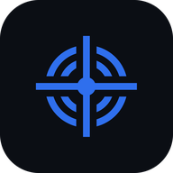
FocusForce+
Morning routine · step 3 of 5
-04:17
Over time, and still counting.
Routines, todos, lists, an app blocker, focus and sleep mode in one Android app. When a step's time runs out, the timer keeps counting, and so do the reminders.
- No internet permission
- No ads, no tracking
- GPLv3, open source
- Android 8.0 and up
What it does
-
Your day, in one list
Home shows how much of today is done and what is up next, with Start or Done right there, then routines, todos and calendar events by time. Widgets put today, quick focus and a list on your home screen.
-
Routines
A real alarm at the start time, then a timer for every step. Run over and the timer keeps counting into the negative and reminds you. Snoozes, the heads-up before the start and Do Not Disturb are set per routine, and a routine can borrow steps from another.
-
Todos
Priority decides how pushy a todo is. Low is one notification. Medium comes up on screen and comes back a couple of times. High rings, and rings again every few minutes. Todos without a date come back at set times each day. Checklists, repeating todos and a trash.
-
Lists
Two kinds. A shopping list sorts what you type by aisle on its own, keeps what you bought before one tap away, and turns into a big tick-off view in the shop. A checklist is for the same things every time, like packing: ticked items stay, and it starts over. A todo or a routine step can carry a list.
-
Blocker
Close apps always, after a daily limit, or on a schedule, overnight included, and during routines, focus sessions and calendar events. Several apps can share one limit. An optional service keeps Instagram and YouTube usable but leaves Reels and Shorts as soon as they open.
-
Focus
A timed session that switches on Do Not Disturb and blocks the apps you pick. Start one on the spot or save sessions with reminders. Ending early asks first and then makes you wait.
-
Sleep
A wind-down reminder, a quiet night, apps closed until morning, and a routine at bedtime and at wake-up. Backup alarms go into your phone's own clock app, so waking up never depends on this one.
What it looks like
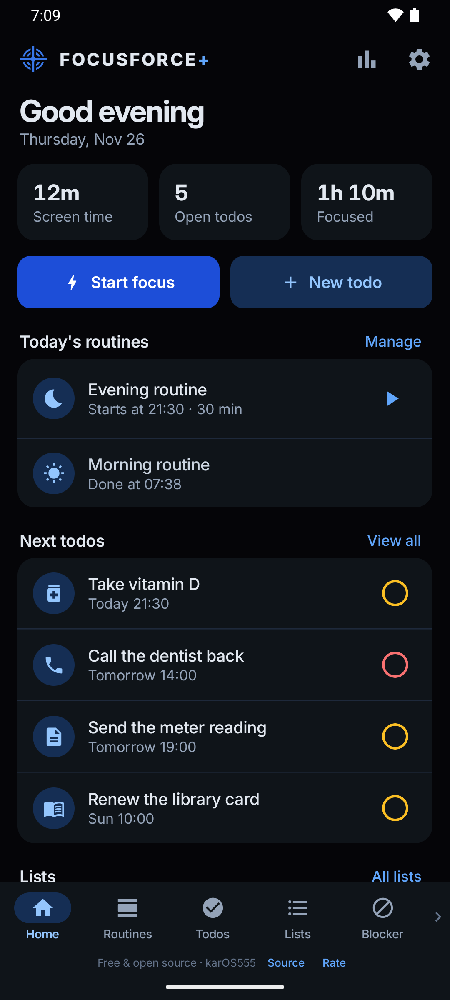
Your day in one list. 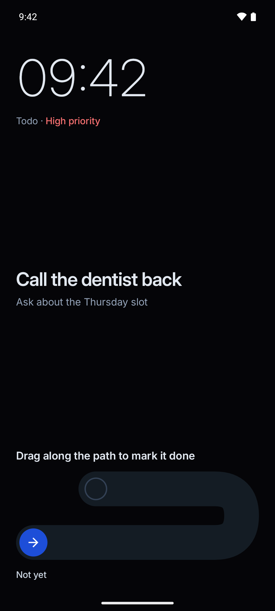
Important todos ring until you answer. 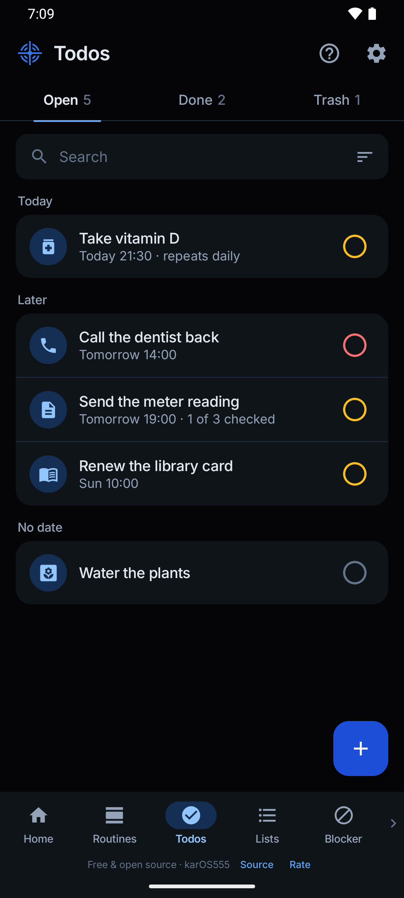
Dated todos ring like an alarm. 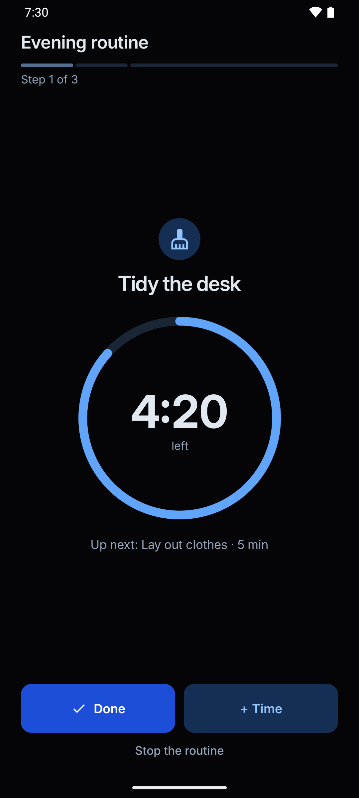
Every routine step has its own timer. 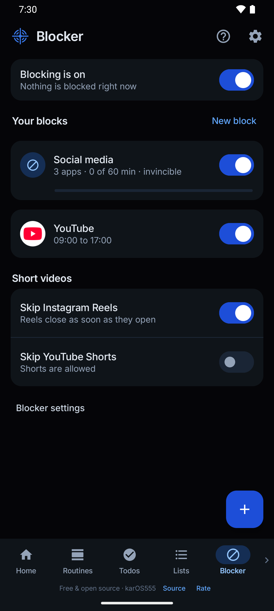
Block apps, or just Reels and Shorts. 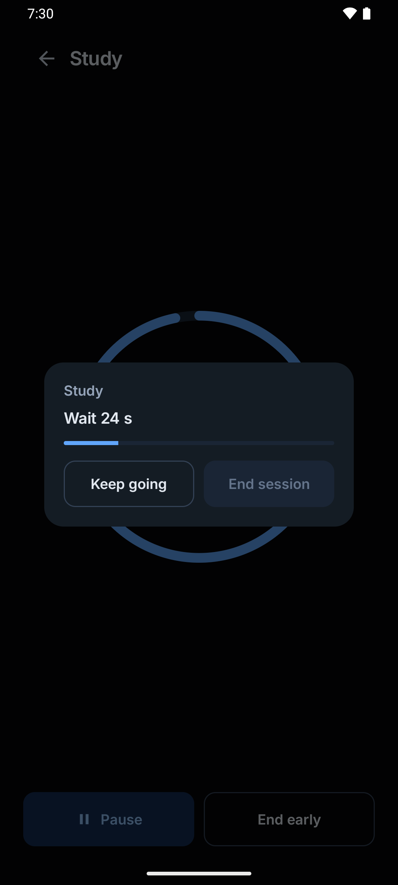
Ending focus early means waiting first. 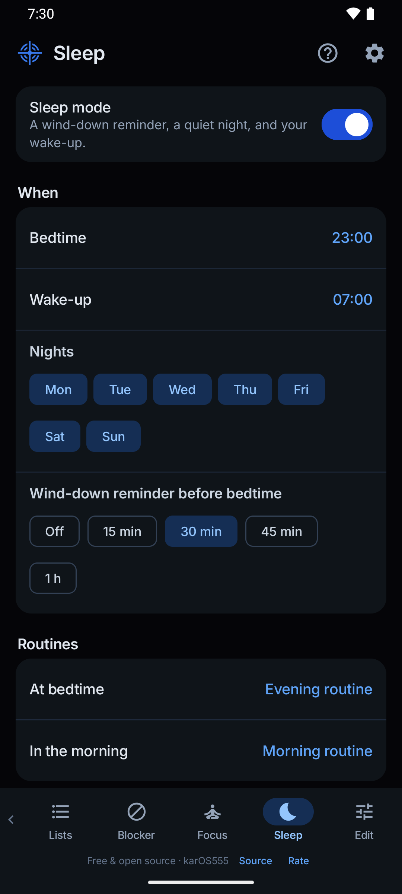
Wind-down, a quiet night, routines at both ends. 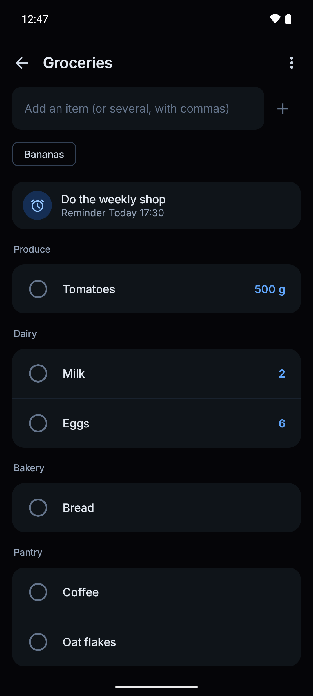
Sections, amounts and a reminder. 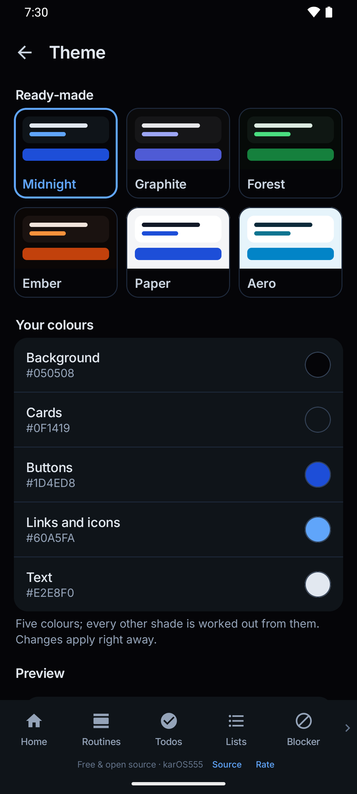
Ready-made themes, or your own.
How it holds you to it
-
Speed bumps
Before you tick off a todo, snooze it, push a routine back, stop it or end focus early, or pause a block, the app can ask again, make you wait, or give you a small task: hold a button, drag a slider or a path, or solve a sum. You pick the mix for each of these, and one switch turns them all off.
-
Invincible mode, one item at a time
Lock a single routine, focus session or block instead of the whole phone. Until it ends on its own, it can't be cancelled or weakened. Everything else stays flexible.
-
Friction, not a trap
The wait in a speed bump is a minute at most, a reminder never rings forever, and you can always uninstall the app from Android settings. The point is to stop the reflex, not to lock you out of your phone.
-
Tamper Protection
If you turn it on, loosening your own lock settings only works in a short daily window you choose, not in the moment you want to give up.
Make it yours
-
Your bar, your colours
Pick which modules appear in the bottom bar and in which order, or switch one off completely. Six themes, two of them light, your own five colours saved under a name, and a real Frutiger Aero style: glass over a summer sky, a green meadow and soap bubbles.
-
Works with other apps
Your calendar on Home, todos with a date in it, and blocks during events. Two-way sync with OpenTasks or Tasks.org, and through DAVx5 with Nextcloud or any CalDAV server. Share text in to make todos, and start things from Tasker or NFC tags (off until you switch it on).
-
Backups you control
A backup file every night into a folder you choose, for example one that Syncthing or Nextcloud keeps in sync, or a single export by hand. An import can be undone, and nothing goes anywhere else.
-
No internet at all
The app has no internet permission, so your data can't leave the phone. No account, no cloud, no ads, no analytics, no crash reporting.
Why it exists
I built it for myself. Every routine app, todo app and blocker I tried stopped working for me the moment motivation dipped, because everything could be swiped away, snoozed forever or switched off in two taps. FocusForce+ is the app I wanted instead, and I use it every day. If your brain works anything like mine, it might fit you too.
Install
FocusForce+ isn't in an app store yet, so you install the APK directly.
-
Open the releases page
and download the
.apkfile of the newest release, at the top. - Open it on your phone. The first time, Android asks whether to allow installs from this source. Allow it.
- The setup guide walks you through the permissions each part needs and explains what each one is for.
FocusForce+ needs Android 8.0 or newer.
The app has no internet access, so it can't check for updates itself. Obtainium can do that for you: point it at the repository once and it installs new versions as they come out. While the app is in beta, switch on "Include prereleases" there, or Obtainium finds no version.
Questions
- Does it need an internet connection?
- No. The app has no internet permission at all, so it cannot send or receive anything. Every feature works offline.
- Can it block only Reels or YouTube Shorts?
- Yes. An optional service leaves Instagram Reels and YouTube Shorts as soon as they open, and the rest of both apps keeps working.
- Is it really free?
- Yes. It is free software under the GNU General Public License v3.0. Nothing to buy, no subscription, no ads, no tracking.
- Why isn't it on the Play Store?
- It is still in public beta and ships as a signed APK with each GitHub release. Store listings come after 1.0.
- What happens to my data if I switch phones?
- Export everything to one file and import it on the new phone, or point the nightly backup at a folder that syncs. Nothing is stored anywhere but on your phone.
Privacy
FocusForce+ collects nothing and sends nothing. There are no accounts, no cloud sync, no analytics, no crash reporting and no advertising, and each permission belongs to one feature. The blocking service only learns which app you opened and reads nothing on the screen.
All details are in PRIVACY.md.
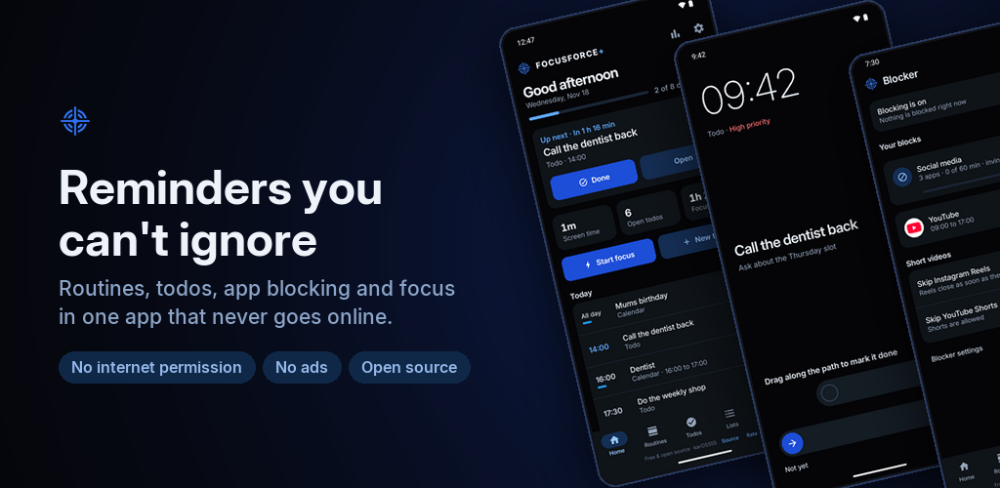
A note on health
FocusForce+ is a self-help tool for focus and habits. It is not a medical device, does not diagnose, treat, cure or prevent ADHD or any other condition, and does not replace professional care. If you're struggling, please talk to a qualified healthcare professional.